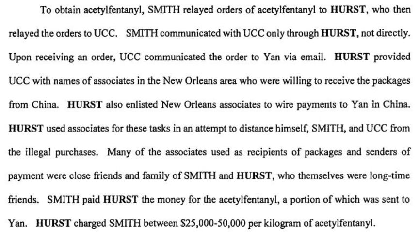
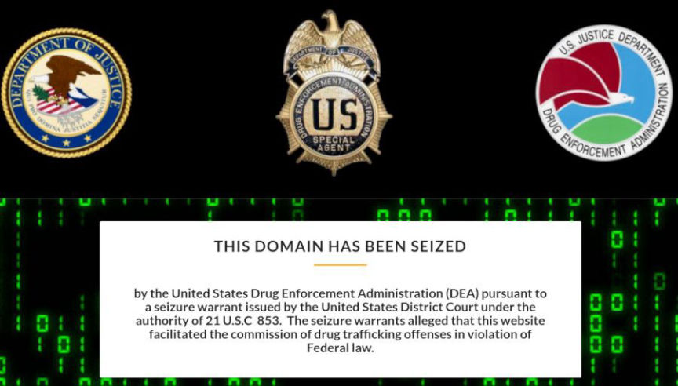
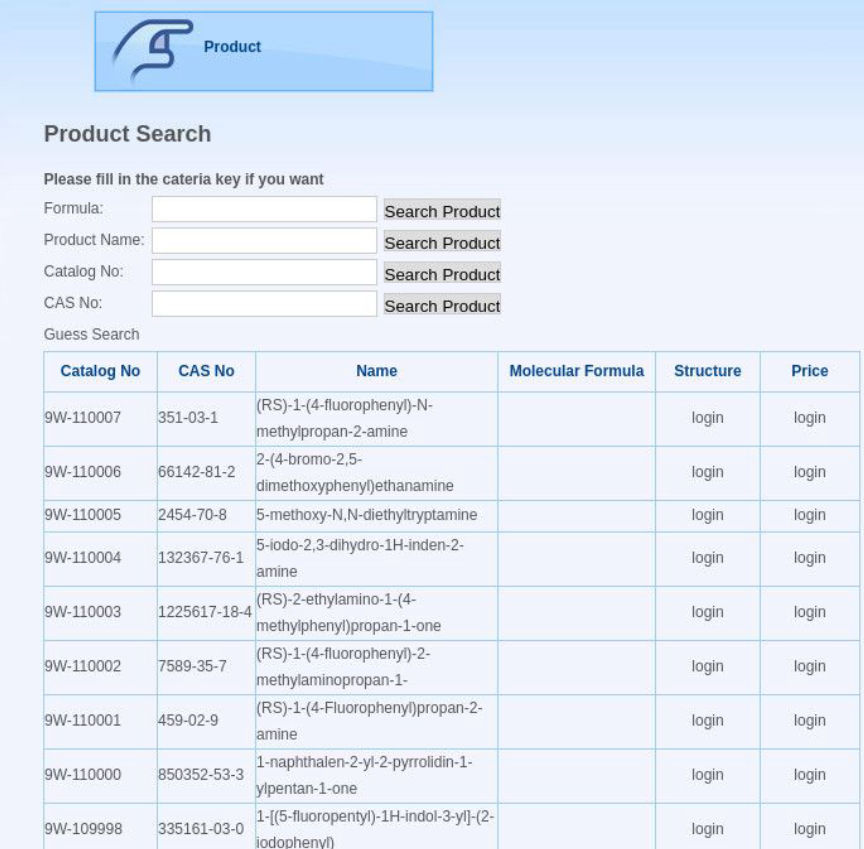
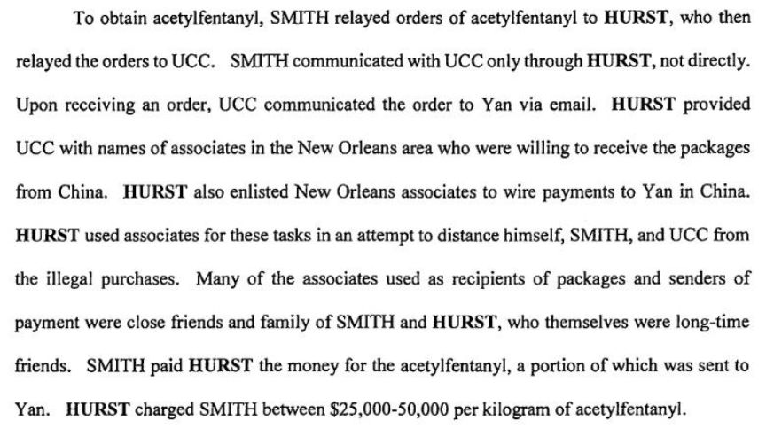
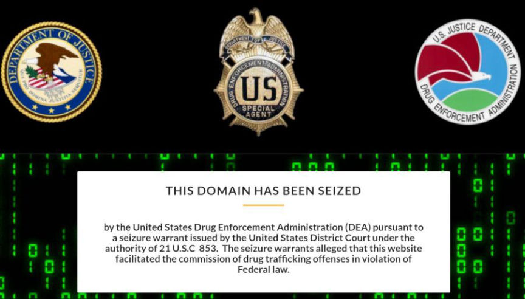
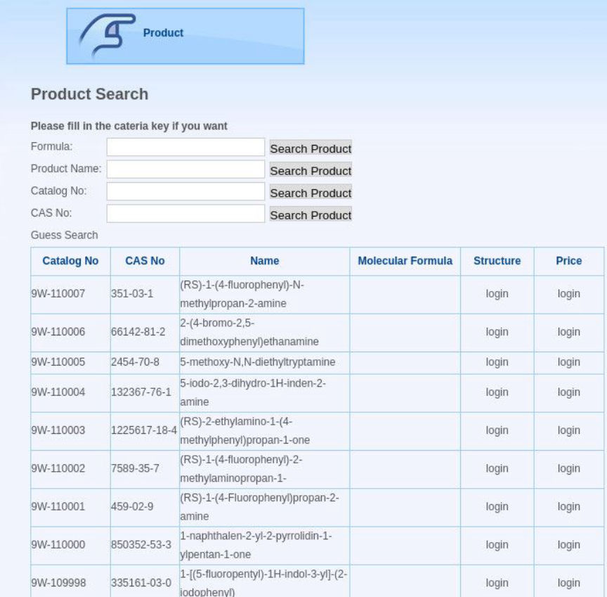

New Orleans Man Convicted of Buying Fentanyl Analogues Online
A New Orleans man used darkweb marketplaces to purchase as many as eight kilograms of acetylfentanyl, a potent fentanyl analogue. The defendant served as an intermediary between two parties and interacted with Chinese research chemical company currently facing a nine count indictment in Mississippi.
DOJ Press Release
U.S. Attorney Peter G. Strasser announced that Carl Hurst, 35, of New Orleans, pleaded guilty Friday, May 31, 2019 to a single count of conspiring to distribute 100 grams or more of a fentanyl analogue and 100 grams or more of heroin. The charge carries a mandatory minimum sentence of ten years in prison and a fine as high as ten million dollars.

According to court records, HURST conspired with others to order kilograms of acetylfentanyl, an analogue of fentanyl, from a Chinese manufacturer. HURST admitted that he conspired to order up to 9 kilograms of the acetylfentanyl in 2014 and 2015. HURST and his coconspirators mixed the acetylfentanyl with heroin or sold it as a standalone product in the New Orleans area.
U.S. District Judge Ivan L.R. Lemelle will sentence HURST on October 23, 2019.
Source: DOJ
Hurst Criminal Complaint: PDF
Xiaobing Yan
During the time-frame of the acetylfentanyl and heroin conspiracy, Hurst and co-defendant Leroy Smith worked together and with others to obtain kilogram quantities of acetylfentanyl, a controlled substance analogue, from a Chinese drug manufacturer named Xiaobing Yan. Yan sold large quantities of controlled substance analogues through various darkweb marketplaces. Smith used a New Orleans-based third party, Unindicted Co-Conspirator (“UCC”), to communicate drug orders to Yan via email. Hurst acted as an intermediary between UCC and Smith.
UCC informed on Hurst and avoided prosecution. During Operation Dark Gold and Operation Darkness Falls, the United States government indicted the owners of Xiaobing Yan for selling fentanyl and dozens of other illegal substances to United States citizens through darkweb marketplaces. They also indicted the owners of a second drug distributor based in China for a number of the same crimes.

From the Department of Justice Announcement regarding Yan’s enterprise:
On Sept. 7, Xiaobing Yan, 40, of China, was indicted in the Southern District of Mississippi on two counts of conspiracy to manufacture and distribute multiple controlled substances, including fentanyl and fentanyl analogues, and seven counts of manufacturing and distributing the drugs in specific instances. Yan, a distributor of a multitude of illegal drugs, used different names and company identities over a period of at least six years and operated websites selling acetyl fentanyl and other deadly fentanyl analogues directly to U.S. customers in multiple cities across the country. Yan also operated at least two chemical plants in China that were capable of producing ton quantities of fentanyl and fentanyl analogues. Yan monitored legislation and law enforcement activities in the United States and China, modifying the chemical structure of the fentanyl analogues he produced to evade prosecution in the United States. Over the course of the investigation, federal agents identified more than 100 distributors of synthetic opioids involved with Yan’s manufacturing and distribution networks. Federal investigations of the distributors are ongoing in 10 judicial districts, and investigators have traced illegal proceeds of the distribution network. In addition, law enforcement agents intercepted packages mailed from Yan’s Internet pharmaceutical companies, seizing multiple kilograms of suspected acetyl fentanyl, potentially enough for thousands of lethal doses.
The site owned by Yan where he sold substances through the clearnet operated under the name 9W Pharm. Their homepage, prior to the seizure of their domain by the United States Drug Enforcement Agency, summarized the company as follows:
9W Pharm has established a broad customer base in the pharmaceutical and biotech industry in North America, South-eastern Asia and European countries, and built close relationships with Chinese and Indian chemical and pharmaceutical manufacturers as well. We maintain good strategic partnerships with TOP 500 pharmaceutical and biotech companies, such as Pfizer, Abbott, Merck, GSK, Bayer, Boehringer Ingelheim, Johnsons&Johnsons etc. Excellent Products Quick Delivery Prompt Service

DOJ Press Release
U.S. Attorney Peter G. Strasser announced that Carl Hurst, 35, of New Orleans, pleaded guilty Friday, May 31, 2019 to a single count of conspiring to distribute 100 grams or more of a fentanyl analogue and 100 grams or more of heroin. The charge carries a mandatory minimum sentence of ten years in prison and a fine as high as ten million dollars.

Excerpt from the Hurst Indictment
According to court records, HURST conspired with others to order kilograms of acetylfentanyl, an analogue of fentanyl, from a Chinese manufacturer. HURST admitted that he conspired to order up to 9 kilograms of the acetylfentanyl in 2014 and 2015. HURST and his coconspirators mixed the acetylfentanyl with heroin or sold it as a standalone product in the New Orleans area.
U.S. District Judge Ivan L.R. Lemelle will sentence HURST on October 23, 2019.
Source: DOJ
Hurst Criminal Complaint: PDF
Xiaobing Yan
During the time-frame of the acetylfentanyl and heroin conspiracy, Hurst and co-defendant Leroy Smith worked together and with others to obtain kilogram quantities of acetylfentanyl, a controlled substance analogue, from a Chinese drug manufacturer named Xiaobing Yan. Yan sold large quantities of controlled substance analogues through various darkweb marketplaces. Smith used a New Orleans-based third party, Unindicted Co-Conspirator (“UCC”), to communicate drug orders to Yan via email. Hurst acted as an intermediary between UCC and Smith.
UCC informed on Hurst and avoided prosecution. During Operation Dark Gold and Operation Darkness Falls, the United States government indicted the owners of Xiaobing Yan for selling fentanyl and dozens of other illegal substances to United States citizens through darkweb marketplaces. They also indicted the owners of a second drug distributor based in China for a number of the same crimes.

The DEA Banner on Yan’s Site
From the Department of Justice Announcement regarding Yan’s enterprise:
On Sept. 7, Xiaobing Yan, 40, of China, was indicted in the Southern District of Mississippi on two counts of conspiracy to manufacture and distribute multiple controlled substances, including fentanyl and fentanyl analogues, and seven counts of manufacturing and distributing the drugs in specific instances. Yan, a distributor of a multitude of illegal drugs, used different names and company identities over a period of at least six years and operated websites selling acetyl fentanyl and other deadly fentanyl analogues directly to U.S. customers in multiple cities across the country. Yan also operated at least two chemical plants in China that were capable of producing ton quantities of fentanyl and fentanyl analogues. Yan monitored legislation and law enforcement activities in the United States and China, modifying the chemical structure of the fentanyl analogues he produced to evade prosecution in the United States. Over the course of the investigation, federal agents identified more than 100 distributors of synthetic opioids involved with Yan’s manufacturing and distribution networks. Federal investigations of the distributors are ongoing in 10 judicial districts, and investigators have traced illegal proceeds of the distribution network. In addition, law enforcement agents intercepted packages mailed from Yan’s Internet pharmaceutical companies, seizing multiple kilograms of suspected acetyl fentanyl, potentially enough for thousands of lethal doses.
The site owned by Yan where he sold substances through the clearnet operated under the name 9W Pharm. Their homepage, prior to the seizure of their domain by the United States Drug Enforcement Agency, summarized the company as follows:
9W Pharm has established a broad customer base in the pharmaceutical and biotech industry in North America, South-eastern Asia and European countries, and built close relationships with Chinese and Indian chemical and pharmaceutical manufacturers as well. We maintain good strategic partnerships with TOP 500 pharmaceutical and biotech companies, such as Pfizer, Abbott, Merck, GSK, Bayer, Boehringer Ingelheim, Johnsons&Johnsons etc. Excellent Products Quick Delivery Prompt Service

List of Products Yan Offered